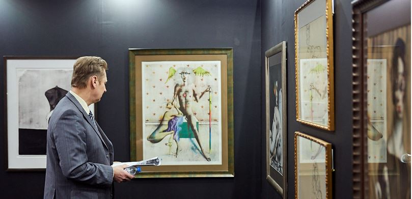
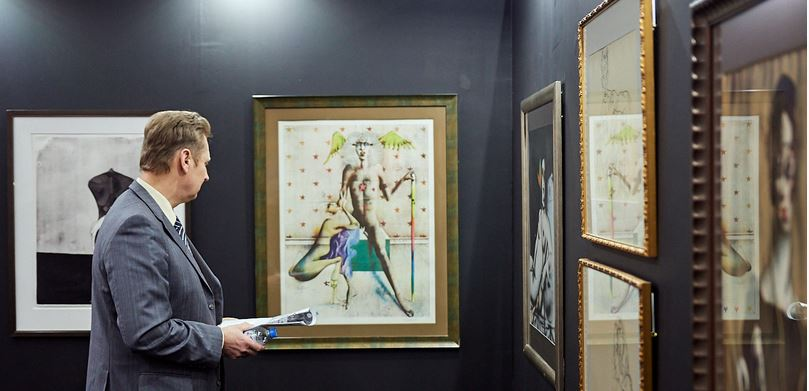

Афиша
Арт-Пермь
2–11 февраля 2019 Пермская ярмарка
22-я Международная выставка-продажа живописи, графики, скульптуры, фотографии и изделий декоративно-прикладного искусства
 

Художественный салон «Арт-Пермь» — одно из самых ожидаемых событий культурной жизни города. Здесь художники демонстрируют своё мастерство, а посетители могут приобрести произведения искусства, найти радость и вдохновение.
Грядущая «АРТ-Пермь — 2019» станет не только выставочным, но и исследовательским проектом, в результате которого мы вместе с вами выведем новые формулы в творчестве. Результат скажет сам за себя, а пока предстоит работа по изысканиям, экспериментам и классификации.
Генеральная ассамблея ООН объявила 2019 год Международным годом периодической таблицы химических элементов в честь периодического закона, открытого Дмитрием Менделеевым в 1869 году.

Именно поэтому в рамках выставки «АРТ-Пермь — 2019» скульпторы, художники, фотохудожники, мастера, поэты, ценители искусства внесут новые смыслы в подачу, восприятие и осознание.
химия отношений, ощущений и реакций
химические соединения в сплавах, смешение молекул красок
как в человеке рождаются стихи, идеи для картин, скульптур, инсталляций?
какое химическое соединение заставляет нас чувствовать вдохновение?
вычисление внутреннего состава произведения, строение материи, закономерности изменений стиля автора, разложения и превращения веществ в эмоциях, взаимоотношениях, мыслях и реакциях, а также закономерности образования новых идей, проектов
1914–1945 гг. От великих потрясений к великой Победе
С 12 декабря 2017
Исторический парк «Моя Россия»

Ключом к пониманию структуры экспозиции является мультимедийная инсталляция, сопровождающая зрителя через всю выставку, общей протяженностью более ста метров.
Масштаб и накал событий, прошумевших над Россией в первой половине ХХ века, беспримерны, исключительны. Две мировые войны, три революции, ломка вековых устоев, массовые репрессии, жестокие социальные эксперименты... И в то же время — это эпоха великих надежд, невиданного энтузиазма, творческого труда, время выдающихся открытий и достижений в области промышленности, науки, образования, литературы и искусства.
Каковы истинные причины революций в России? Кто стоял за этими катаклизмами? Можно ли обнаружить их механизмы? Как случилось, что власть и народ великой страны допустили подобное? Каковы истинные цифры потерь и реальные масштабы достижений этого периода? Каковы не мифологизированные, а реальные персонажи и герои того времени? Насколько близки к действительности стереотипы восприятия этой эпохи у старшего и у молодого поколений?
Экспозиция, которую предстоит увидеть посетителям, основана на исторических свидетельствах и документах. Уникальные электронные копии материалов, немалая часть которых до недавнего времени хранились в архивах под грифами «Секретно» и «Совершенно секретно», предоставлены Государственным архивом Российской Федерации, Российским государственным архивом социально- политической истории, Центральным архивом ФСБ России, Российским государственным архивом кинофотодокументов, Государственным центральным музеем современной истории России и др. Научное консультирование осуществляли эксперты Института российской истории РАН.
Тайны Очёрского холма
«Тайны Очёрского холма. Дети. Драконы. Ученые» выставка в Музее пермских древностей и первая книга для детей, изданная музеем
Открытие выставки и презентация книги для детей – кульминационные мероприятия юбилейного года, посвященного 60-летию начала раскопок в Ежово и 90-летию со дня рождения П.К. Чудинова.
Как раскопать пермских ящеров? Без научной смелости, мужества и решительности не обойтись!

В 1952 – 1960 гг. в Очерском районе Пермского края проходили самые масштабные в СССР палеонтологические раскопки: с помощью бульдозеров был срыт целый Ежовский холм и открыта новая фауна ящеров – недостающее звено в эволюции наземных существ! Руководил раскопками пермяк Петр Чудинов. Экспедиция была «вооружена», наряду с кирками и тяжелой техникой, фотоаппаратом, фиксировавшим, как каждый день, шаг за шагом, ученые вгрызались в Ежовский холм.
В объектив попали не только рабочие будни (земляные работы, взятие монолитов), но и то, что обычно остается скрытым от посторонних глаз: как праздновали новые находки шампанским, как был вырыт пруд для нужд экспедиции, как ходили на охоту. Фотолетопись фиксирует всю жизнь экспедиции: от момента отправления из Палеонтологического института Академии наук до извлечения первых находок, от открытия целого «кладбища» древних ящеров до триумфального возвращения экспедиции в Москву.
Несколько полевых сезонов вместе с учеными в экспедиции жили их дети, которые запомнили свои палеонтологические каникулы на всю жизнь! Теперь уже современные дети смогут отправиться в почти настоящие раскопки пермского периода по выставке и найти не только «рогатых» и «саблезубых» ящеров, но и рыб, стрекоз или тараканосверчков, а также забраться в палатку палеонтолога и завести полевой дневник.
Ксения Чудинова (специальный гость мероприятия), внучка П.К. Чудинова, расскажет детям о том, что делать, если ваш дедушка – настоящий ученый-палеонтолог, у которого дома есть кабинет со столом, наполненным разными редкостями: китайскими сувенирами, книгами на непонятных языках, рыболовными снастями и даже настоящими костями драконов.
Музей пермских древностей впервые представляетполную фотолетопись Ежовских раскопок на выставке «Тайны Очерского холма», которая откроется 2 декабря 2012 г.
Тему детей на раскопках продолжит презентация книги, изданной музеем. Эта книга о детях и для детей.
Она состоит из трех частей: первая часть содержит фантастический рассказ П.К. Чудинова о том, как два мальчика – Петруха и Вовка, участники раскопок в Ежово – попали на машине времени в пермский период, и о том, кого они там встретили.

Вторая часть - исторический очерк историка науки А.Нелихова о настоящих раскопках пермских ящеров на Ежовском холме.
Третья - рассказ писателя Елены Чудиновой, дочери Петра Константиновича о том, как стать настоящим палеонтологом, и что делать, если твой папа раскапывает драконов.
В создании этой необычной книги принимали участие сами дети: создавая иллюстрации, они фантазировали о том, как могли бы выглядеть грозные и безобидные обитатели пермского периода 267 млн. лет назад.
Открытие выставки и презентация книги для детей – кульминационные мероприятия юбилейного года, посвященного 60-летию начала раскопок в Ежово и 90-летию со дня рождения П.К. Чудинова.
Выставка работала в Музее пермских древностей с 1 декабря 2012 года